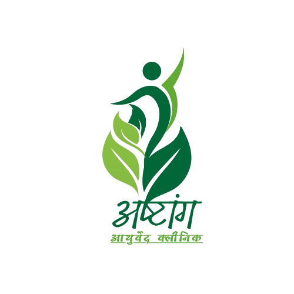

Expert Care
Ashtang Ayurved Specialist
Offering world-class Ayurvedic procedures right in the heart of Sitapur. We specialize in Panchkarma, Agni Karma, and Leech Therapy for holistic recovery.
--Dr. Brahma Prakash Maurya
Call for Appointment

Healing Naturally...
Specialized Ayurvedic treatments for chronic diseases in Sitapur.
Offering world-class Ayurvedic procedures right in the heart of Sitapur. We specialize in Panchkarma, Agni Karma, and Leech Therapy for holistic recovery.
An ancient thermal therapy providing instant relief from chronic muscular and joint pain without surgery.
A comprehensive five-fold detoxification process to restore balance and boost your natural immunity.
Natural blood purification using medicinal leeches to treat skin disorders and varicose veins effectively.
*Prior booking is highly recommended for Panchkarma and Agni Karma sessions.
Agni Karma is a traditional thermal micro-cautery technique. While it involves heat, it is performed with precision. Most patients in our Sitapur clinic describe it as a minor "pinprick" sensation, providing almost instant relief for chronic pain like Sciatica or Joint pain.
Leech Therapy (Jalaukavacharana) involves using medicinal leeches to remove localized impure blood and inject healing enzymes. It is highly effective for skin diseases, varicose veins, and non-healing ulcers.
The number of sessions depends entirely on your body type (Prakriti) and the severity of the disease. Typically, a standard detox cycle lasts 7 to 21 days.
"The Agni Karma treatment for my joint pain was miraculous. Highly recommend Ashtang Ayurved!"
- Amit Sharma, Sitapur